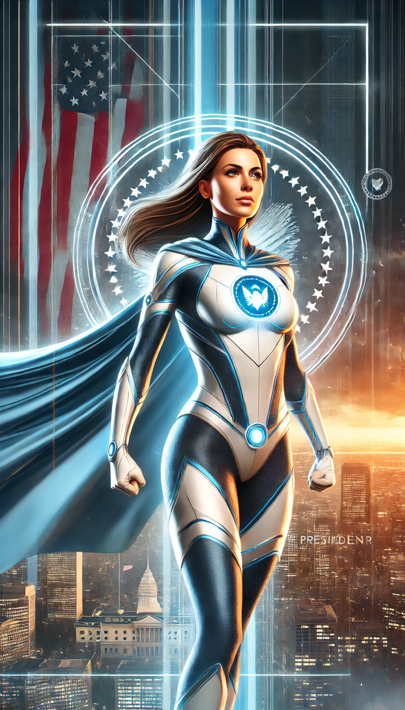
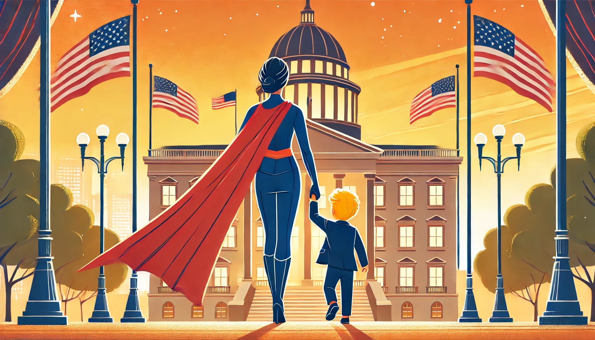
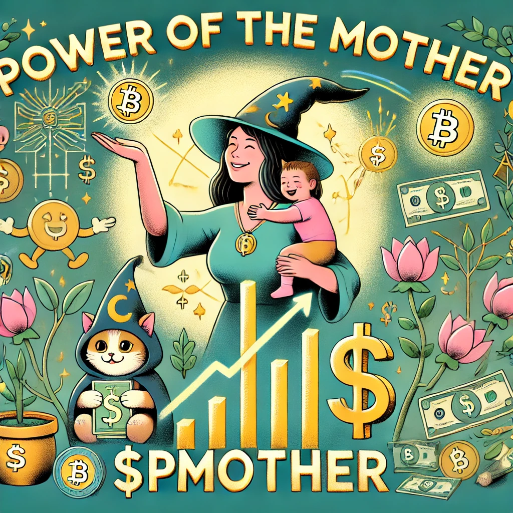

Projects

Project 1: Power of the Mother $PMOTHER - An inspiring and empowering image showcasing the concept of 'Power of the Mother'.

Project 2: Power of the Mother $PMOTHER - An inspiring and empowering image showcasing the concept of 'Power of the Mother'.

Project 3: Power of the Mother $PMOTHER - A humorous and empowering image showcasing the concept of 'Power of the Mother'.
Project 4: A heartwarming scene showing a superhero mother holding hands with a young boy with yellow hair, guiding him towards a grand building that represents the government.
Project 5: President Mother - A powerful superhero mother, standing in a dynamic pose in a sleek, modern superhero costume with a cape flowing behind her.